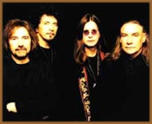
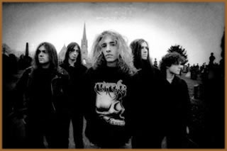
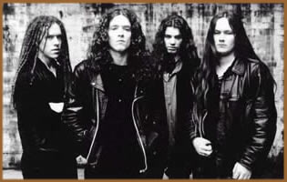
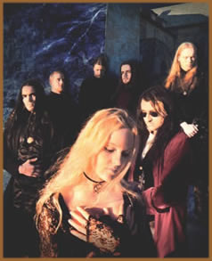
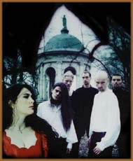

Temos ouvido que, na Europa, o Doom
está voltando para "seu devido lugar", que é
estar restrito aos clubes de Heavy Metal, "de onde
não deveria ter saído". Bom, não creio
que seja bem assim. Óbvio que o Doom sempre foi e é
um sub-estilo do Heavy Metal (assim como o são o Black,
o Death, o Power, o Thrash, etc.).
O que realmente aconteceu foi uma fusão natural, que mais
cedo ou mais tarde ocorreria. Afinal, ambos os estilos (Doom
e Gótico) têm similaridades, e a junção
foi questão de tempo...
Retomando sua história, veremos que desde
a década de 70 (ou seja, desde seu início), o Heavy
Metal é esquisito. Ao mesmo tempo em que é um dos
estilos musicais mais fechados e radicais, ele já se bandeava
para outros estilos nada ortodoxos. Foi assim, por exemplo, com
o country (caipiras norte-americanos) através de bandas
como Black Oak Arkansas, Molly Hatchet, Blackfoot etc.; com as
experimentações metálico-progressivas do
Rush ou do Nektar; fora coisas não metálicas, mas
primo-irmãs, como os primeiros discos do Queen, que faziam
uma fantástica fusão hard-heavy-ópera-pop.
Se o metal pôde juntar-se ao Funk
(como o Faith No More), ao Rap/Hip Hop (como o Body Count),
aos eletrônicos (casos como do Rammstein) e tantos outros
estilos nada familiares aos "meninos cabeludos", porque
não o poderia com a melancolia gótica?
Resumindo ao extremo, diríamos que o Doom
é filho direto do Heavy Metal, o Gótico
filho direto do Punk, sendo o Gothic Metal uma
fusão do Gótico com o Heavy Metal
- não necessariamente com o Doom. É claro
que não é tão simples (como parece) fazer
uma definição precisa. Por exemplo, bandas como
Trouble estão num cabo de guerra entre o Doom por excelência
e o Heavy Metal tradicional. Bem como do lado Gótico, onde
bandas como Southern Death Cult ou Theatre of Hate estão
nesse mesmo ponto de passagem - quer dizer, são muito punks
para serem góticas, mas muito góticas para serem
chamadas de punk. Como definir bandas como Love Like Blood, que
é simpática aos góticos, mas comparece, sem
problemas, em coletâneas de Heavy Metal? E isso vale até
para o visual: veja a indumentária totalmente Heavy Metal
das bandas de Doom e o estilo S&M do Gótico, resgatado
pela loja Sex (e que teve na ex-punk Siouxsie sua modelo maior).
É bom lembrar que essa coisa Punk/S&M foi largamente
utilizada pelos headbangers já nos anos 80, mesmo antes
da fusão musical Gótico & Metal. Um dos ícones
do fetichismo Couro & Tachinhas foi, sem dúvida, Rob
Halford, em seus gloriosos dias de vocalista do Judas Priest,
bem como Paul Di'Anno (idem com o Iron Maiden), e muitos outros.
E a trilha sonora, em geral, também primava pelos temas
obscuros (alguns explícitos, como o satanismo - mesmo que
fake – de bandas como Venom, Bathory, Celtic Frost, etc.).
A escola obscura do metal, não há
dúvidas, foi inaugurada pelo Black Sabbath. Dizer que eles
eram Doom é simplório demais, além de falso
- eles passam longe de serem catalogados em apenas uma vertente
musical. Mais apropriado é dizer que ditaram as normas
do Heavy Metal como um todo. Mas todos os elementos do estilo
que seria conhecido anos mais tarde como Doom estavam ali contidos.
Lançando seu primeiro disco numa sexta-feira 13, faziam
questão de ressaltar o lado negro da vida. Começava
pelo nome da banda, que era o título de um clássico
filme de terror (dirigido por Mario Bava).
Suas letras embasavam a escolha dessa temática,
indo desde descrições de assombrações
e demonidades (como na própria Black Sabbath) até
canções de protestos (como Electric Funeral e Children
of the Grave). Quer dizer, mesmo quando denunciavam as mazelas
desse mundo terreno, o faziam sob uma ótica sobrenatural.
Daí muita gente achar que tudo o que eles falavam era macabro.
No entanto, eles perguntam em After Forever: "Onde você
pensa que vai depois de morrer? / Você por acaso gostaria
de ver o Papa no fim de uma corda (enforcado)? / Acho que foram
pessoas como você que crucificaram Cristo!". Não
é de se estranhar que seus maiores seguidores, já
nos anos 80, também utilizaram bastante esse expediente,
chegando a serem citados como banda de White Metal: o Trouble.
O Trouble veio à cena junto com a New Wave
of British Heavy Metal (NWOBHM). Ao lado do Witchfinder General,
foram os mais destacados discípulos do chamado som setentista,
sabbathiano. Tivemos ainda outras bandas nessa linha, mas a maioria
era quase cópia dos bardos de Birmingham (como St. Vitus,
Obssession etc.). Ou seja, a originalidade desse início
de década de 80 não era o forte nessa corrente específica,
pois, de resto, o Heavy Metal vivia seus melhores dias, como até
hoje não se viu mais. Talvez tentando um confronto direto
com o Punk, dizia-se que o Heavy Metal era um movimento (com gritos
de guerra de "longa vida ao Metal", "Heavy
Metal é um estilo de vida", e assim por diante).
O estilo se inchou de tal forma que precisou ser dividido em vários
segmentos. Um critério comum era priorizar uma característica
específica da música e trabalhar em cima dela (velocidade,
potência, distorção, vocais podres, temas
macabros, etc). Assim surgiram o Thrash Metal (com Exodus, Testament,
Megadeth etc.), o Speed Metal (como o Whiplash - tocar rápido
é que importa! dizia Kirk Hammet, do Metallica), o Power
Metal (Grave Digger, Running Wild, entre outros - de onde surgiu
o Metal Melódico), o Black Metal (com Venom, Bathory, etc.),
o Death Metal (nos precursores Hellhammer, Possessed, etc) - fora
os hibridismos Black-Thrash (Slayer), Black-Death (Celtic Frost)
etc.
E, entre eles, o Doom Metal, que se caracterizava
pelos andamentos cadenciados ou lentos (às vezes quase
parando), porém, pesados ao extremo, sem virtuosismos e
firulas musicais de seus instrumentistas. Talvez o modelo maior
seja a música Black Sabbath, dos próprios - daí
seu pioneirismo. O andamento quase parando é uma das marcas
do estilo. O Cathedral seria, anos mais tarde, mestre nesse ponto.
As bandas de Doom Metal cantam a melancolia, a depressão,
o oculto, fazendo coro em muitos desses quesitos com outros estilos,
como o Black Metal e o Death Metal. Apesar de que quase todos
os sub-estilos do Heavy Metal nessa época tocavam nesse
ponto, desde Helloween até Slayer, passando até
por Motley Crue (Shout At The Devil), Iron Maiden, Mercyful Fate,
Sepultura etc. A diferença é de que, em estilos
mais extremos (como o Black/Death), priorizava-se o lado mais
místico, fantástico e sobrenatural do obscurantismo.
Grande parte dessas bandas dizia-se satanistas, fazendo verdadeiros
cultos a Lúcifer em seus discos. O som pesado, veloz, com
riffs rápidos, vocais ríspidos (gritados, desesperados,
ou urrados, tentando soar se o próprio demônio fosse
vocalista das bandas) servia de pano de fundo a esses "rituais
satânicos".
O Doom, por sua vez, quando utiliza esses elementos,
o faz de acordo com o som, ou seja, uma coisa mais introspectiva,
mais individual, mais lírica, mais serena - numa convergência
direta aos temas utilizados pelos Góticos (resvalando por
vezes na psicodelia sessentista).
É bom lembrar ainda que, mesmo tendo nascido
na Inglaterra, esse novo sopro de vida no Metal (a NWOBHM
- New Wave Of British Heavy Metal), de certa forma ajudou
a democratizá-lo, pois apresentou ao mundo bandas de todos
os lugares do planeta (quer dizer, fora do eixo EUA/Grã-Bretanha).
Assim, ficamos conhecendo bandas da França (H-Bomb, Trust),
Espanha (Baron Rojo), Argentina (V8), Dinamarca (Mercyful Fate),
Japão (Loudness), Suécia (Heavy Load), Suíça
(Celtic Frost), Brasil (Sepultura) etc. E, apesar de capitaneada
por novos nomes no Heavy Metal (como Iron Maiden e Saxon), ainda
revitalizou outros que já trabalhavam desde os anos 70,
como Judas Priest (que, aliás, virou ícone e modelo
maior, tanto do som quanto da indumentária fetichista sado-masoquista
de seus integrantes), Scorpions, Motorhead etc., além de
ninguém menos que - ironia das ironias - o Black Sabbath!
A banda, agora com Dio nos vocais, tinha outra sonoridade, mais
moderna, que em nada devia ao que predominava no mercado metálico
mais jovem da época. Mesmo assim, ouve-se ecos do som do
Sabbath com Dio em riffs e bases de guitarras de várias
bandas atuais, desde Stratovarius até Danzig.
O
Black Sabbath (foto ao lado), com efeito, após a saída
de Ozzy Osbourne, nunca mais foi o mesmo. E nem o vocalista, em
sua carreira solo, conseguiu repetir o feito do furacão
dos anos 70. A química parecia ter sido quebrada com a
separação dos membros originais. Com a entrada de
Dio, o som mudou muito, e descarac-terizou a escola criada por
eles mesmos na década anterior. Mesmo com o esforço
de Dio para manter a temática (que, além de tudo,
era mérito de Gezzer Butler, o baixista), nada seria como
antes. Com sua substituição por Ian Gillan, o último
suspiro de criatividade como banda veio com Born Again. Por outro
lado, Ozzy trazia flashes dos dias memoráveis em apenas
alguns trechos de músicas, como Diary of a Madman,
Mother Earth, Waiting for Darkness, e pouca
coisa mais. O estandarte fora definitivamente perdido para os
já citados Trouble, Witchfinder General, St. Vitus, Obssession,
etc., que eram mais Black Sabbath que o próprio. O problema
é que eram uma corrente do metal 80 com um pé nos
anos 70, que mais tentavam soar como os mestres do que procuravam
criar um caminho próprio, uma identidade própria,
mas sem perder o referencial. E vem da Suécia a solução
para esse dilema: o Candlemass.
O Candlemass se apresentou ao mundo em 1986,
através do clássico Epicus, Doomicus, Metalicus,
e conseguiu o que parecia impossível: eles não
se limitaram a imitar seus antecessores. De alguma maneira,
têm-se a nítida impressão de que eles
continuaram o trabalho do Black Sabbath do ponto em que
estes pararam, em algum lugar entre o Sabotage e o Never
Say Die. Traziam o progresso e a modernização
natural dentro do estilo. Temos ali a temática obscura,
aliado a técnicas novas do Metal extremo (como dois
bumbos na bateria). O som e os riffs arrastados estavam
lá, mas ao lado de vocais que não tentavam
soar chorados e desesperados, como os de Ozzy - pelo contrário,
os vocalistas do Candlemass pareciam vir mais da escola
clássica do Deep Purple (ou algo meio Graham Bonnet,
por exemplo). Nomes de músicas evocavam o velho Sabbath
(como Solitude); o próprio termo Doomicus
resgata o título de uma música dos ingleses
(Hand of Doom, que, assim como Solitude,
são do Paranoid, não por acaso, o
álbum do Sabbath mais próximo de uma definição
Doom). Lançaram álbuns fenomenais e definitivos
dentro do Doom Metal, notadamente os que contavam com Messiah
Marcolin nos vocais.
Da Suécia para a Suíça, correndo
por fora desse universo Doom, vamos encontrar uma banda que também
abriria caminhos:o Celtic Frost. Descendente direta do Hellhammer
- que, ao lado do Possessed, podem ser consideradas as idealizadoras
do Death Metal - o Celtic Frost estava um passo à frente
de várias outras bandas de metal extremo. Com os álbum
To Mega Therion, de 1985 (com capa de H. G. Giger) ,
e In to The Pandemonium, de 1987, eles inauguram a combinação
Black + Death + Orquestra + Vocais femininos. Assim como
Blood, Fire, Death, do Bathory, são trabalhos
visionários, que, mesmo tendo sido recebidos com desconfiança
pelos mais radicais da época, anteviram o que seria usado
em profusão mais para frente, através de bandas
como (principalmente) o Therion - banda que até o nome
denuncia as influências.
Enquanto isso, no Gótico, algumas bandas
já trabalhavam na possibilidade dessa junção
de estilos. A começar por um dos ícones da estética
musical e visual gótica: The
Sisters of Mercy. Com Vision Thing a banda se distancia de
sua característica original e adiciona elementos metálicos
ao seu som. Não por acaso, algumas das influências
musicais declaradas pela banda são bandas dos anos 70,
notadamente Led Zeppelin. A famosa canção Stairway
to Heaven esboçou até fazer parte do (vastíssimo)
repertório de covers da banda. Vision Thing, no
entanto, não agradou os fãs mais antigos, e nem
angariou novos, pois era um híbrido sem objetivos claros.
Muitos dizem até que se trata dum álbum solo de
Eldricth, e que o verdadeiro espírito do Sisters estava
nos dissidentes The Mission.
Temos outra banda singular ainda no Gothic
Rock: The Fields of Nephilim. Trilhando um caminho mais ortodoxo,
mais próxima das guitarras (partindo do pressuposto que
o pós-punk, como o nome diz, é um estágio
acima do punk e a mola mestra do Gótico) e, por conseqüência,
de um som mais rock, eles também anteciparam uma aproximação
com o Heavy Metal, na fusão que mais tarde seria conhecida
como Gothic Metal. Carl McCoy possuía um timbre
de vocal próximo aos guturais metálicos. As guitarras
passeavam por bases e solos econômicos e melódicos,
com timbres únicos (herança do The Sisters of Mercy),
aproveitados anos mais tarde nas fases góticas de bandas
como Paradise Lost, Theatre
of Tragedy, Within
Temptation, etc. As letras também versavam sobre temas
ocultistas (dizem que a banda estudava e levava a sério
- principalmente seu vocalista). Após a dissolução
do Fields, em 1991, seus membros formariam bandas distintas.
O final dos anos 80, porém, ainda traria
algumas surpresas. Uma delas atendia pelo nome de Lee Dorrian,
membro fundador de uma das bandas criadoras do Grind/Crust/Core,
o Napalm Death. Em seu princípio, no comecinho dos anos
80, apareceram até em coletâneas punk, tal a agressividade
e extremismo de seu som. Uma vez fora do Napalm, Dorrian se transforma
da água para o vinho (ou, no caso aqui, do vinho para a
água), e funda o Cathedral, uma das bandas mais paradoxais
dentro do Doom: consegue fazer um som moderno, agregando influências
contemporâneas, mas lançando mão de um som
totalmente retrô, anos 70, bem Black Sabbath - sem, no entanto,
soar datado. Músicas pesadas, extremamente lentas, riffs
e timbres totalmente sabbathianos, misturando tudo isso à
uma psicodelia moderna, resgatada anos antes pelos góticos
(via bandas como The Cult, por exemplo). Muitos consideram essa
corrente (que se inicia com Sabbath, passa pelo Candlemass e desemboca
no Cathedral) como True Doom, ou seja, o Verdadeiro
Doom - sendo as demais correntes apenas variação
dessa linha. Aliás, esse resgate dos anos 70 se aprofunda
ainda mais, originando, anos mais tarde, o Stoner Metal, que hoje
conta com bandas como o próprio Cathedral, além
de Kyuss, Las Cruces, Nebula, Terra Firma etc.
Entrando
nos anos 90, vamos encontrar um lançamento crucial: Lost
Paradise, com a banda inglesa Paradise Lost (foto ao lado). Não
do disco em si (contemporâneo à explosão,
na Flórida, do Death Metal norte-americano), mas da banda,
que ditaria regras de comportamento e ecletismo musical nos anos
posteriores. Como tantas outras bandas de Death Metal da época,
tinha sua marca registrada nos vocais/urros de Nick Holmes. Com
o álbum seguinte, o diferencial se tornava mais claro:
um som calcado nos andamentos lentos, mais riffs que solos - e
esses econômicos - enfim, todas as caracte-rísticas
de uma banda de Doom, mas com vocal ainda Death. Esse segundo
álbum, sintomaticamente chamado de Gothic, fez
surgir um sub-estilo dentro do Doom, chamado Doom-Death Metal.
Era o caminho natural, pois ambos os estilos (Doom e
Death) estavam em ebulição, com milhares de bandas
fazendo a mesma coisa pelo mundo, mas com outras tantas procurando
se diferenciar da maioria. Depois disso, por mais curioso que
seja, cada estilo, em separado, se fortaleceu e cresceu mais ainda.
No mesmo ano de Gothic, o My Dying Bride lança
seu primeiro EP, com o esquisito nome de Symphonaire Infernus
Et Spera Empyrium. Esses dois lançamentos traziam alguns
detalhes que marcariam o Doom e lhe dariam uma cara e identidade
mais própria: Gothic trazia vocais femininos (soprano)
como apoio ao vocal gutural de Nick Holmes. Esse recurso já
havia sido utilizado por outras bandas de metal extremo (como
os pioneiros Venom e Celtic Frost), mas sob outro contexto, e
não com o destaque que a partir de agora ganhariam (não
exatamente no Paradise Lost, porém). O My Dying Bride trazia
um violino em sua formação. Aliás, o EP de
estréia tem a introdução com esse violino,
não com um som angelical e suave, mas mórbido, pesado,
carregado de uma tristeza quase palpável. O Trouble também
já havia utilizado um, mas não como instrumento
fixo e nem como um dos elementos de sua música. Com esses
recursos, o som caracteristicamente Death Metal (principalmente
pelos vocais urrados, sem melodia, apenas destilando ódio,
revolta ou tristeza) era enriquecido com elementos estranhos ao
Heavy Metal mais extremo. E o melhor de tudo: sem soar deslocado,
dentro do contexto proposto.
Do outro lado do Atlântico, acompanhando
a ebulição britânica do Doom Metal, estréia
no mercado a banda norte-americana Type
O Negative, capitaneada pelo carismático Peter Steele,
com o álbum Slow, Deep and Hard. O título
resume bem o conteúdo. É um disco tipicamente Doom
Metal, pioneiro nos EUA, com os elementos clássicos desse
estilo (mas com alguns resquícios do Carnivore, banda anterior
do líder Steele). Os vocais procuram um equilíbrio
entre o gritado (meio Slayer, meio Rob Zombie) e o melódico
(em tons graves, meio góticos, como seria a marca registrada
da banda anos mais tarde). O instrumental conta com aqueles andamentos
lentos (alguns lentos até demais, chegando à beira
da caricatura), pesados, climáticos, linhas de guitarra
apenas melódicas (solo mesmo só no minuto final
da primeira música - e olha que ela tem 12 minutos!). Traz
como curiosidade temas carregados de um certo sarcasmo, sexismo,
humor e non-sense (que, aliás, não são características
comuns no estilo), como nos títulos da músicas:
uma das mais legais, por exemplo, chama-se Gravitacional Constant:
G= 6.67 x 10 -8 cm-3 gm-1 sec-2.
Há
ainda mais uma banda primordial para moldar o Doom Metal como
o conhecemos hoje. Também ingleses, o pessoal do Anathema
(foto ao lado) nos brinda com seu primeiro lançamento em
1992. Trata-se do EP Crestfallen. De comum com os outros,
os vocais/urros guturais, as guitarras melódicas, praticamente
sem solos, andamentos lentos, riffs cavernosos etc. Mas tinha
uma agradável curiosidade: a sessão vocais femininos
ganhou o destaque devido e se faz representar pela belíssima
canção Everwake, com toques medievais em
seu tom acústico, acompanhada apenas pelo violão.
E a experiência bem sucedida do primeira EP se transfere
para o primeiro álbum inteiro, o crucial Serenades.
Dessa vez, a canção é J'ai Fait Une Promesse,
e, da mesma forma do anterior, é uma belíssima interferência
etéreo-acústica de vocal-feminino ao massacre sonoro
proporcionado pela banda. O diferencial desses discos do Anathema
também está nos vocais que, apesar de guturais,
trazem uma certa melodia, talvez por serem alternados entre duas
vozes (uma às vezes limpa).
Além de tudo isso, trazem uma música
que pode ser considerada também precursora do Gothic Metal:
Sleepless. Com uma levada de baixo & bateria típica
do Gothic Rock, emoldurada por dedilhados leves de guitarra e
um vocal limpo, apenas com um eco, causou furor nas hordas metálicas
da época. Mas ela não é Doom (é só
comparar com o resto do material da própria banda), não
é Gótica e nem Heavy Metal - é um híbrido
desses dois últimos, e é um bom exemplo de que Gothic
Metal não tem de passar necessariamente pelo Doom.
No mesmo ano de lançamento de Serenades,
do Anathema, outras importantes bandas estão lançando
álbuns no estilo. Há que se destacar a estréia
de Messiah Marcolin (ex-vocalista do Candlemass) no Memento Mori
(com o disco Rhymes of Lunacy), banda que, de certa forma,
evolui o trabalho de sua ex-banda - apesar do Candlemass não
perder o pique, e manter o nível de seus lançamentos
anteriores, com um novo vocalista que em nada deve aos anteriores.
Um disco à altura do trio de ferro britânico
do Doom (Paradise Lost - My Dying Bride - Anathema) é,
com certeza, Dance of December Souls, do Katatonia. Esse
disco traz um apanhado perfeito de belas combinações
do estilo, mostrando um trio afinado com o mesmo. A banda cria
temas densos e tensos, com recursos esporádicos de um teclado
aqui e ali, aliado a bases melódicas perfeitas para os
vocais desesperados do baterista/vocalista. Isso sem contar com
uma brincadeirinha no final do disco com a música tema
de Love Story (que ficou, no mínimo, curiosa,
sem soar ridícula). Os vocais fazem uma ponte perfeita
entre o Black Metal e os guturais extremos em voga na época.
Guturais, como, por exemplo, de outro grande lançamento
daquele ano: Forever Scarlet Passion, do Celestial Season.
Esses holandeses vêm reforçar a tendência criada
pelo My Dying Bride, ou seja, doom + urros + violinos.
Um grande disco para uma banda que mudaria completamente seu estilo
em anos posteriores (aliás, tendência da maioria
delas, ou seja, redirecionar o caminho musical, fugindo de suas
raízes).
Data dessa época um lançamento que
seria um marco nos estilos mais sombrios do underground: Bloody
Kisses, do Type O Negative. A junção do Gótico
com o Doom e com o Metal alcança interessantes formas.
A própria banda já anunciava isso em seus lançamentos
anteriores, escudada pela corrente natural que os estilos seguiam,
até seu encontro final. O mais importante disso é
que eles trouxeram pelo menos um hit para o underground obscuro.
Trata-se de Black Number 1, que põe o gótico
e seus primos dark-metálicos nas paradas de sucesso mundiais
(inclusive aqui, no Brasil). Seguido ainda por Christian Woman,
o Type O Negative se vale de estereótipos dos estilos em
questão, tanto na música quanto no visual (alguns
clipes chegam a ser hilários, dada a "forçada
de barra"), o que traz um certo desconforto e polêmica
para os apreciadores e fãs de longa data. Mas tem o mérito
já mencionado de trazer as trevas de volta à mídia
(tanto o lado mais metal, pelo Doom, quanto o lado mais sombrio,
pelo Gótico). E, como sempre acontece quando algo dá
certo, traz a reboque outros artistas, alheios aos estilos, mas
que utilizam elementos desses para aproveitar a onda (como fez
Marilyn Manson, por exemplo).
No ano seguinte viria um lançamento divisor
de águas, tanto para a banda, quanto para o estilo: Wildhoney,
do Tiamat. Antes (pra variar) uma banda de Black Metal, atendiam
pelo nome de Treblinka, e o mentor Johan Edlund pela alcunha de
Hellslaughter! O crescimento natural e maturidade musical da banda
os direcionou para o Doom. Após alguns discos naquele primeiro
estilo, brindam o mundo com essa obra-prima. Whatever That
Hurts, por exemplo, tem um balanço perfeito entre
o vocal gutural, mas não urrado ou gritado, e melódico,
ao mesmo tempo, adicionado a partes sussurradas, que casam perfeitamente
com os climas do álbum. Estes estão à cargo
de teclados etéreos, efeitos eletrônicos, sons da
natureza, backing vocals de um coral angelical e gótico,
em músicas perfeitas com letras que trazem, inclusive,
reflexões sobre a vida (terrena mesmo, como a evocação
à Gaia, ou seja, nosso planeta). Os elementos psicodélicos
nesse disco retomam influências latentes do Pink Floyd,
em sua fase progressiva, características que seria no futuro
muito utilizada tanto pelo próprio Tiamat quanto em outras
bandas (The Gathering, principalmente). Tanto som, quanto letras,
melodias, capa, etc., fazem com que esse disco seja um marco,
não só para o Doom, mas também para o Gothic
Metal, desenhado aqui com maestria.
O Doom Metal como era conhecido passa a agregar
várias outras nuances, notadamente por ganhar a simpatia
do estilo Gótico. A união os faz crescer e revitaliza
a ambos. Parece um típico caso de unir forças para
poderem ambos, posteriormente, seguirem seus caminhos novamente
em separado, mas renovados. Como no The 3rd and The Mortal, que
se destaca pelo híbrido entre os climas etéreos,
cortesia dos vocais celestiais de Kari, e a base instrumental
com um pé no Etéreo, Doom e Gothic Metal. Com isso
não dá para dizer se a banda é uma coisa
ou outra (Gótica ou Doom), ao mesmo tempo em que agrada
a várias tribos. O destaque maior, aqui no caso, cabe ao
fato de que o vocal principal de uma banda está a carga
de uma vocalista, já que antes elas eram backing ou apenas
ficavam com participações especiais. No caso do
gótico, esse fato já era corriqueiro, pois algumas
grandes bandas já estavam entregues à grandes vocalista
(Siouxsie, XMal, Cocteau Twins, etc.). Mas no mundo metal isso
era meio raro. E Kari acabou abrindo caminho para outras grandes
solistas, dentre as quais, Anneke Van Giersbergen, do Gathering.
Após dois discos com outros vocalistas (sempre
com um masculino principal escudado por um feminino), a entrada
de Anneke vem estabilizar o grupo e revolucionar o som da banda,
trazendo na cola inúmeras outras banda com vocalistas mulheres.
Com o álbum Mandylion, ela estréia na banda
e traz seu timbre único para o mundo do metal. O primeiro
single, Strange Machines, tem como tema o livro e o filme
A Máquina do Tempo (H. G. Wells). A música
In Motion #1 foi inspirada na banda Slowdive. Quem ouve
a música título do álbum, Mandylion, pensa
se tratar de algum single perdido do Dead Can Dance, tamanha é
a semelhança. Sand and Mercury é uma canção
épica, que tem em seu final uma narrativa de J. R. R. Tolkien,
mostrando a visão do escritor sobre a morte. Fusão
perfeita do Doom Metal com o Gótico.
Ao
mesmo tempo, outras mulheres ganham destaque nesse mercado. Casos
como On Thorns I Lay, que debuta com o álbum Sounds
of Beautiful Experiences, e a também importante estréia
do Theatre of Tragedy (foto ao lado), com álbum homônimo.
E entra em cena o (jocosamente) chamado Metal-Bela-e-a-Fera,
fazendo com que o contra-ponto entre vozes masculinas e femininas
seja um dos subgrupos do estilo que mais cresceram nos anos seguintes,
chegando ao ponto de ser estereotipado como a própria definição
do estilo Doom, conforme vimos aqui, não é totalmente
verdadeiro. Talvez o motivo seja a agressividade do vocal masculino,
aliado a guitarras distorcidas, que agrada as fãs de metal,
mas com a oposição ao vocal quase sempre angelical
de uma voz feminina, o que, aliado a teclados climáticos,
acerta em cheio o gosto dos góticos. Ainda hoje, várias
bandas nesse estilo aparecem no mercado, sendo o subgrupo mais
produtivo dentro do Doom, e que ainda não perdeu forças,
ao lado do Stoner. E, mesmo trilhando hoje outros caminhos, o
Theatre of Tragedy ainda é conhecido por muitos como a
banda que define o que é Doom (assim como Tristania,
Traif of Tears, After
Forever, Within Temptation, etc).
Outro ponto importante dessa época é
o lançamento de Draconian Times, do Paradise Lost.
Os anos de Death Metal ficaram definitivamente para trás,
e o som da banda agora é praticamente Gótico. O
disco em questão, abrindo com a ainda Doom Enchantment,
traz várias canções curtas, moldadas no melhor
estilo gótico-Sisters-Fields. Tanto que, na versão
brasileira desse lançamento, uma das faixas bônus
é um cover para Walk Away, do já citado
Sisters of Mercy. Caminho inverso que vai fazendo outro pioneiro
do gênero, o Cathedral. Cada vez mais se aproximando da
(ou retornando à) década de 70, seu The Carnival
Bizarre não faz esquecer da importância do velho
Sabbath, além de indicar os caminhos para o Stoner Metal,
que vai pautar uma nova tendência metálica no final
dos anos 90.
Importante salientar também o refinamento
das experiências de uma banda enriquecer seu som não
só com violinos, mas com uma orquestra inteira. O mestre
no estilo é, sem dúvida, o Therion.
Nos primórdios também uma banda de Death Metal,
vai inserindo aos poucos os elementos que outras bandas já
haviam experimentado, como teclados e vocais femininos. À
formação básica dos primeiros trabalhos,
a cada disco mais e mais instrumentos de orquestra (sintetizados)
vão sendo incorporados. Primeiro, uma vocalista feminina,
depois duas vozes clássicas, mais tarde orquestras vocais
& instrumentais (no começo, via sintetizadores), etc.
Poucas bandas fariam tão bem feito essa união, que
culminou com a gravação de uma orquestra de verdade
no álbum Deggial. As apresentações
ao vivo do grupo vão se rarefazendo, dada à grande
produção necessária para reprodução
nos shows do que é feita nos discos. A própria concepção
de banda vai se desfazendo, e Christofer Johnsson vai deixando
seu posto de vocalista, para se dedicar somente à guitarra
e às composições, bem como ser o mentor do
que acaba se tornando mais um projeto (grandioso) do que uma banda
propriamente dita (dentro da concepção que todos
nós temos de banda).
Grandes bandas de outros estilos agora migram sem
problemas para o Doom e o Gothic em geral. Assim ocorre com o
Amorphis e o Moonspell, por exemplo. O Amorphis lança álbuns
cada vez mais lentos e depressivos (a partir do EP Black Winter
Day), na escola Doom Death do início da década.
O Moonspell, com Irreligious, também solta as amarras do
Black Metal praticado pelo grupo em início de carreira
e nos mostra composições maravilhosas que também
beiram o Gothic Rock - ou Gothic Metal, como Opium, Ruin and Misery,
etc. Essa é uma tendência dos grupos da gravadora
Century Media (do qual o Moonspell faz parte), que traz novos
ares ao Heavy Metal como um todo, e do Black/Death em especial.
Até mesmo podreiras como Rotting Christ e Dark Tranquility,
dentre outras, vão flertar com o Gothic. Vai de encontro
com, por exemplo, Zoon, lançamento dessa época
do Nefilin, que nada mais é que a banda de Carl McCoy,
antigo vocalista do The Fields of The Nephilim. É um disco
que resumia bem o que, provavelmente, o Fields estaria fazendo
se não tivesse parado: um som que mistura Black, com Doom,
com Thrash, com Gothic; ou seja, um híbrido perfeito para
designar uma corrente metálica que poderia muito bem ser
definida como Dark Metal. Estariam nesse ponto alguns
trabalhos de bandas como Alastis, The Black League, Red Harvest
etc., e até mesmo algumas coisas mais recentes de velhos
medalhões, como a banda Black Metal grega Rotting Christ
(fase A Dead Poem), Kreator (fase Endorama),
e similares.
O Paradise Lost, como sempre na dianteira da movimentação
no mundo da música, vem com One Second, um disco
que assusta seus fãs mais antigos e ortodoxos. No entanto,
o caminho que já vinha sendo delineado por eles não
deixavam dúvidas sobre o direcionamento que adotariam.
Algo como faz também o Theatre of Tragedy, que solta um
disco na praça, que não seria nada mais que um EP,
com as tradicionais sobras de estúdio, mas que se torna
crucial em sua carreira. Trata-se de A Rose For The Dead,
que contém faixas do Velvet Darkness They Fear,
remixadas. Com um dedo do Das Ich, duo alemão de música
eletrônica, o Theatre of Tragedy dá um giro em sua
carreira e aponta o que farão no futuro. Antes, porém,
uma cover do Joy Division
(Decades), nesse mesmo EP, prepara o caminho para o próximo
lançamento: o fenomenal Aégis. Contendo
um apanhado de belíssimas músicas no melhor estilo
Gothic Rock (mesmo com muitos dizendo que aquilo ainda é
Doom), tornam-se de vez "queridinhos da turma das trevas".
E esses, por sua vez, acolhem, também, a obra-prima do
Therion, Vovin. Indo desde o Gótico até
o Power Metal tradicional, passando pelo Doom menos ortodoxo,
o disco agrada a gregos e troianos, ou seja, góticos e
headbangers.
Grandes mudanças ainda viriam surpreender
o mercado metálico em geral. O Tiamat se entrega de vez
ao psicodélico e ao gótico, deixando pouca coisa
de Doom em seus últimos lançamentos (A Deeper
Kind Of Slumber e Skeleton Skeletron). O que não
é um demérito, já que grandes músicas
ainda estão lá; até uma cover dos Stones,
no Skeletron, ficou melhor que a original, captando todo aquele
clima sombrio que música original talvez queria passar.
O Paradise Lost, com Host, faz duvidar se a banda é
a mesma de dez anos atrás. O Moonspell, com The Butterfly
Effect segue os passos de Tiamat, Paradise & cia. O Katatonia,
com Tonight's Decision, também abraça essa
nova tendência. O Gathering está cada vez mais na
linha pink-floydiana, e suas viagens musicais já são
rotuladas de Trip-Rock. O single de Amighty, traz, por
exemplo, várias versões dessa música em ritmos
eletrônicos, além de uma cover para uma música
do Talk Talk, banda Synth-pop dos anos 80. Isso sem falar que
eles já tinham feito uma cover de uma música do
Dead Can Dance, anos antes.
Muitos
outros estilos de metal também se juntaram ao Doom
(ou adicionaram elementos desse) para aproveitar a onda
e retomar seu caminho com força total. Assim é,
por exemplo, com o Nightwish.
A banda toca o mais puro Power Metal, da escola alemã
clássica, mas, graças aos belos vocais da
também belíssima Tarja, escapa de vez em quando
para o Gothic (principalmente em alguns toques épicos
e místicos de algumas canções). Um
caso quase similar ao do Dreams of Sanity. Graças
também à uma grande voz feminina, à
cargo de Sandra Schleret, também passeiam entre o
Gothic e o Power Metal sem problemas. Em seu álbum
conceitual Masquerade, contam com a colaboração
de Tilo Wolff na regravação do clássico
The Phantom Of The Opera. Tilo Wolff é proprietário
do selo da banda, o Hall of Sermon, e vocalista do Lacrimosa,
banda tipicamente Gótica que também trabalha
com elementos clássicos e metálicos com desenvoltura.
Aliás, Wolff também participa da música
Endorama, do álbum homônimo do Kreator,
estreitando ainda mais seus laços com o Heavy Metal.
E da Holanda também vem o bom Within Temptation (foto
ao lado), que tem uma variação na linha The
Beauty & The Beast: a voz principal é a
feminina e a secundária é a masculina.
No Brasil, pouco se tem feito em matéria
de Doom, especificamente. Uma das mais tradicionais, que
já está há um bom tempo na estrada,
é a Pentacrostic, que vai na linha tradicional Doom/Death.
Outra, que já andou pelos mais extremos estilos de
metal e agora flerta com o Doom (e algumas vezes até
com o Gothic) é o Genocídio. Em seus dois
últimos trabalhos eles contaram com vozes femininas
abrilhantando as músicas. O último traz, em
algumas músicas, os vocais de Bel, da banda paulistana
de Gothic Rock, Twilight Gods. Flertes também com
Doom em bandas como Obskure, Monasterium, Thuata de Danahan,
Spina Bifida, Imago Mortis, etc. A se destacar também
as excelentes Silent Cry, Pettalom e Dark Eden, na linha
Theatre of Tragedy & Tristania, mas com trabalhos de
qualidade, sem soarem como simples cópias da banda
européia.
É bom salientar que os caminhos atuais trilhados
pelas bandas mais tradicionais que flertaram com o Doom não
as desmerece, pois, dentro do que se propuseram a fazer, estão
fazendo bem feito. No entanto, não se pode dizer que estejam
ainda fazendo Doom Metal. Isso porque, a começar pelo fim,
de Metal já não se tem nada há muito tempo.
Os objetivos hoje são outros, o público alvo talvez
seja outro. Pode até ser o mesmo do começo, só
que mais amadurecido, pois foram tantas as mudanças. E
Doom... bem, perdeu-se a definição, não há
dúvidas também. A garotada que está começando
agora, ao procurar por Doom, achará pouca coisa, e com
certeza deverá procurar em trabalhos passados.
Embora o ecletismo seja primordial para a sobrevivência
de todo e qualquer estilo musical, perdeu-se com o passar dos
anos a ponta da corda. Mas isso era inevitável. Tanto que
foi necessário que houvesse o "chacoalhão"
do Metal no Gótico (talvez via Doom) e vice-versa para
que ambos os estilos estejam hoje rejuvenescidos. Vide a crescente
produção musical de ambos os estilos na atualidade.
Mas aí... já é outra história.
Por
Jorge Vitzac